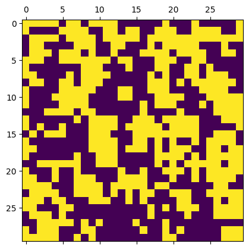
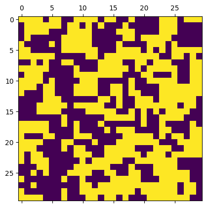

Lab 8: MCMC Algorithms and Considerations#
For the class on Monday, February 10th
The following cell defines the same IsingModel2D class that we already used in Lab 7.
Show code cell source
import numpy as np
import matplotlib.pyplot as plt
class IsingModel2D:
def __init__(self, side_size: int, boundaries=None, initial_values="cold", antiferro=False):
self._side_size = int(side_size)
self._size = self._side_size * self._side_size
indices = np.arange(self._size).reshape((self._side_size, self._side_size))
neighbor_indices = np.stack([
np.roll(indices, 1, 0), # up
np.roll(indices, -1, 1), # right
np.roll(indices, -1, 0), # down
np.roll(indices, 1, 1), # left
])
if boundaries not in [None, "periodic"]:
try:
bu, br, bd, bl = boundaries
except TypeError:
bu = br = bd = bl = boundaries
idx = np.arange(self._size, self._size + 3)
for bv, s in zip([bu, br, bd, bl], [(0,0), (1,Ellipsis,-1), (2,-1), (3,Ellipsis,0)]):
neighbor_indices[s] = idx[int(np.sign(bv))]
self._neighbor_indices = neighbor_indices.reshape(4, self._size).T
self._data = np.empty(self._size + 3, dtype=np.int32)
self._data[-3:] = [0, 1, -1]
if isinstance(initial_values, str):
if initial_values == "hot":
self.data = np.random.default_rng().random(self._size) >= 0.5
elif initial_values == "cold":
self.data = 1
else:
self.data = initial_values
self._J = float(-1 if antiferro else 1)
@property
def size(self):
return self._size
@property
def data(self):
return self._data[:-3].reshape(self._side_size, self._side_size).copy()
@data.setter
def data(self, value):
value = np.ravel(value)
if len(value) not in [1, self._size]:
raise ValueError(f"`value` must be a single value or an array of size {self._size}")
new_value = np.ones(len(value), dtype=np.int32)
new_value[~(value > 0)] = -1
if len(new_value) == 1:
new_value = new_value[0]
self._data[:-3] = new_value
def show(self, **kwargs):
plt.matshow(self.data, vmax=1, vmin=-1, **kwargs)
def _check_site_index(self, site_index: int):
if not isinstance(site_index, int):
i, j = site_index
site_index = int(i) * self._side_size + int(j)
if site_index >= 0 and site_index < self._size:
return site_index
raise ValueError(f"`site_index` must be between 0 and {self._size - 1} (inclusive)")
def calc_magnetization(self):
return self._data[:self._size].sum(dtype=np.float64) / self._size
def calc_total_energy(self, ext_field=0.0):
energy = (
self._data[self._neighbor_indices].sum(axis=1, dtype=np.float64)
* self._data[:self._size]
).sum(dtype=np.float64) * self._J * (-0.5)
if ext_field:
energy -= self._data[:self._size].sum(dtype=np.float64) * float(ext_field)
return energy
def calc_local_energy(self, site_index: int, ext_field=0.0):
site_index = self._check_site_index(site_index)
energy = (
self._data[self._neighbor_indices[site_index]].sum(dtype=np.float64)
* self._data[site_index]
* self._J
* (-1.0)
)
if ext_field:
energy -= self._data[site_index] * float(ext_field)
return energy
def flip(self, site_index):
self._data[self._check_site_index(site_index)] *= -1
def transition_prob_metropolis(self, site_index: int, beta: float, ext_field=0.0):
return np.exp(2.0 * beta * self.calc_local_energy(site_index, ext_field))
def transition_prob_gibbs(self, site_index: int, beta: float, ext_field=0.0):
return 1.0 / (1.0 + np.exp(-2.0 * beta * self.calc_local_energy(site_index, ext_field)))
def sweep(self, beta, ext_field=0.0, nsweeps=1, seed=None, transition_prob="metropolis"):
rng = np.random.default_rng(seed)
transition_prob_func = getattr(self, f"transition_prob_{transition_prob}")
accept = 0
for _ in range(nsweeps):
for i in range(self._size):
if rng.random() < transition_prob_func(i, beta, ext_field):
self.flip(i)
accept += 1
return accept / self._size / nsweeps
A. Metropolis-Hastings vs. Gibbs Sampling Methods#
If we start a 2D Ising model with the “cold” initial condition, and set \(\beta = 1/kT\) to a value lower than the critical value (corresponding to a temperature higher than the critical temperature; see Part B of Lab 7), the Metropolis-Hastings algorithm could fail if the value of \(\beta\) is too low.
🚀 Tasks and Questions:
In the first code cell below, try a few very small values of \(\beta\) and describe what you observe. Specifically,
How do the value of \(\beta\), the acceptance rate, and the resulting lattice relate to each other? Make some plots to demonstrate your answer.
When \(\beta\) is very small (temperature is very high), what do you expect the lattice to behave from a physical perspective?
In the second code cell below, repeat Step 1 but use the Gibbs sampling method instead. You can switch to Gibbs sampling by calling the
sweepmethod like this:m.sweep(beta, nsweeps=50, transition_prob='gibbs')
Describe what you observe.
m = IsingModel2D(30, initial_values="cold")
beta = 0.25
acceptance = m.sweep(beta, nsweeps=50)
print("Acceptance rate =", acceptance)
m.show()
Acceptance rate = 0.5957777777777777

m = IsingModel2D(30, initial_values="cold")
beta = 0.25
acceptance = m.sweep(beta, nsweeps=50, transition_prob='gibbs')
print("Acceptance rate =", acceptance)
m.show()
Acceptance rate = 0.3766444444444444

// Write your answers to Part A here
B. Time to Equilibrate (Burn-in)#
🚀 Tasks and Questions:
Set up a 30-by-30 lattice with the “hot” initial condition.
Set
betato 0.55.Run
sweep1,000 times, but each time withnsweeps=1. After each run, record the average magnetization.Make a plot of the stored average magnetization value as a function of the number of sweeps that have been run.
Describe what you observe. Does the average magnetization reach a plateau? How long does it take to reach a plateau?
Repeat [Steps 1-4] but with
betaset to 0.45.
# Include your implementation for Part B here
# Complete "..." in the the follow code
m = IsingModel2D(...)
beta = ...
sweep_indices = np.arange(1000) + 1
magnetization_values = []
for i in sweep_indices:
m.sweep(...)
magnetization_values.append(m.calc_magnetization())
fig, ax = plt.subplots(dpi=150)
ax.plot(sweep_indices, magnetization_values)
ax.grid(True)
ax.set_xlabel("Sweep Index")
ax.set_ylabel("$\\langle m \\rangle$ Average magnetization")
// Write your answers to Part B here
C. Autocorrelation#
Set up a 30-by-30 lattice with the “hot” initial condition.
Set
betato 0.45.Run
sweep1,000 times, but each time withnsweeps=1. After the first 100 sweeps, start to record the average magnetization.Calculate the average of the 900 average magnetization. We’ll call this \(\langle m \rangle_c\).
Subtract \(\langle m \rangle_c\) from the 900 magnetization values you collected.
Calculate the autocorrelation of the 900 magnetization values (with the overall average subtracted) using the
autocorrfunction (defined below).Plot the autocorrelation as a function of the number of sweeps (use
sweep_indices_no_burnin).Describe what you observe. Does the autocorrelation decay? How fast does it decay?
Repeat [Steps 1-8] but with
betaset to 0.55.
# Include your implementation for Part C here
# Complete "..." in the the follow code
def autocorr(x):
result = np.correlate(x, x, mode='full')
return result[result.size // 2:]
m = IsingModel2D(...)
beta = ...
sweep_indices = np.arange(1000) + 1
magnetization_values = []
for i in sweep_indices:
m.sweep(...)
magnetization_values.append(m.calc_magnetization())
# make `magnetization_values` a numpy array so that we can use numpy functions
magnetization_values = np.array(magnetization_values)
n_burnin = 100
sweep_indices_no_burnin = sweep_indices[n_burnin:]
magnetization_values_no_burnin = magnetization_values[n_burnin:]
# Add Steps 4-6 here:
# Complete "..." in the the follow code
fig, ax = plt.subplots(dpi=150)
ax.plot(sweep_indices_no_burnin, ...)
ax.grid(True)
ax.set_xlabel("Sweep Index")
ax.set_ylabel("Autocorrelation of magnetization")
plt.show()
// Write your answers to Part C here
Tip
Submit your notebook
Follow these steps when you complete this lab and are ready to submit your work to Canvas:
Check that all your text answers, plots, and code are all properly displayed in this notebook.
Run the cell below.
Download the resulting HTML file
08.htmland then upload it to the corresponding assignment on Canvas.
!jupyter nbconvert --to html --embed-images 08.ipynb